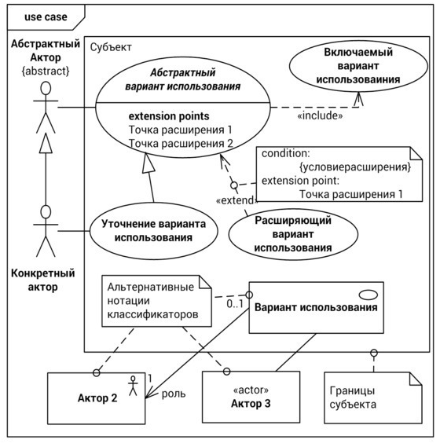

СЦЕНАРИИ И ВАРИАНТЫ ИСПОЛЬЗОВАНИЯ ОСНОВНЫЕ ПОНЯТИЯ
Актором (actor) называется классификатор, который моделирует пользователя или систему, внешнего по отношению к моделируемой системе или компоненту. Акторов, которые используют систему для достижения собственных целей, называют основными. Акторов, которых система использует для достижения целей других акторов, называют второстепенными.
Вариантом использования (use case) называют классификатор, который описывает совокупность сценариев взаимодействия акторов с системой или компонентом для достижения какой-либо цели, значимой для акторов. Варианты использования могут различаться по уровню цели, достижение которой они обеспечивают: высокоуровневые цели, пользовательские цели и отдельные функции системы.
Субъектом (subject) варианта использования называют систему или компонент, взаимодействие акторов с которым он описывает.
Ассоциация (association) актора с вариантом использования указывает на взаимодействие актора с субъектом в одном из сценариев данного варианта использования.
Отношение расширения (extension) между вариантами использования указывает, что при выполнении заданного в точке расширения (extension point) условия сценарий расширяемого варианта использования будет приостановлен, и взаимодействие будет продолжено в рамках расширяющего варианта использования.
Отношение включения (inclusion) указывает, что в процессе выполнения сценарии базового варианта использования вызывают выполнение сценариев включаемого варианта использования.
Как и для других классификаторов, для акторов и вариантов использования определено отношение обобщения (generalization)
